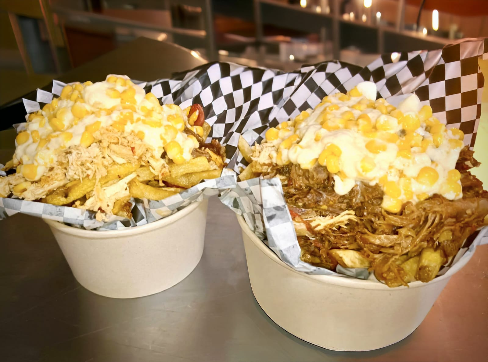

LAS CONSENTIDAS DE LA CASA
POR FUERA,
DORADITAS.
Empanadas de maíz, crocantes por fuera y llenas de carne. Aquí el relleno habla por sí solo.
MUCHO RELLENO.
CIUDAD BOQUÍA, PEREIRA.
EL HAMBRE PIDE
PAPAS CON TODO.
DORADO, CROCANTE Y CON TODO
SEÑOR PATACÓN.
UN ANTOJO CON PERSONALIDAD
AREPAS Y MÁS.
DE NUESTRA COCINA, SIN TANTO CUENTO
ASÍ SE VE
EL ANTOJO.
Las fotos de nuestra casa. El relleno, el queso y ese plan que ya se te está antojando.




CON CARIÑO.
DETRÁS DE CADA ANTOJO
HAY PERSONAS.
Y MUCHO
CORAZÓN.
Somos quienes te reciben en Papas y Café. Un negocio familiar en Ciudad Boquía con una idea sencilla: que comer rico también sea pasarla bueno.
Nos gustan las empanadas bien rellenas, las mesas con buena compañía y esos planes que empiezan con un “¿y si vamos por algo?”.
DEL “SE ME ANTOJÓ” AL “YA VOY”
NOS VEMOS
EN BOQUÍA.
Ven con hambre. Ven con tu parche.
Del resto nos encargamos nosotros.
BUENA COMPAÑÍA.
AQUÍ ES EL PLAN
Parque Industrial · Ciudad Boquía, Pereira
Mz. 12, casa 18, local 2
HORA DE ANTOJARSE
5:00 p. m. a 10:30 p. m.
Consulta los días de atención por WhatsApp.